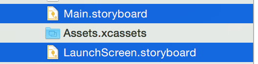
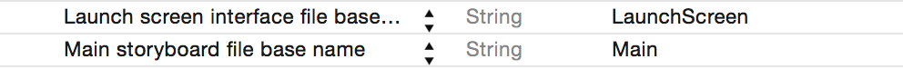
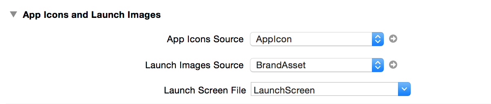

不从Storyboard启动
自从升级了xcode6后就不能自动创建空项目了，每次总会自动创建个storyboard。把从storyboard改为手动创建window。 1,删除下面这些没用的：
2,配置文件中删除下面选中的两项：
3,target的launchImage改为Set，如果这里设置的话会造成window在非3.5寸设备上是不能全屏的，上下会有黑边
4,在AppDelegate中添加如下代码
至此，工程就可以从手写代码中启动了，而不是从storyboard中启动。
升级了xcode7以后，完成上面的四步后程序依旧不会全屏运行。 解决方法： 1，至少添加一张1136*640的程序启动图片。添加了此图片后，程序就可以全屏运行了，在4英寸以上设备会显示启动图， 在3.5寸设备上不会显示启动图。 2，用iOS8或以前的SDK打包，但是这并不是苹果推荐的方式。 3，添加storyboard，或启动xib文件。 原因： 在iOS9以前xcode会根据屏幕尺寸自动生成一张1136*640的图片，而且iOS9以后不会了。具体的说明可以参见 苹果官方论坛的解答。